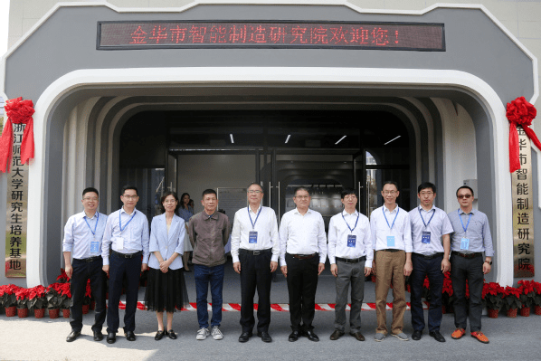
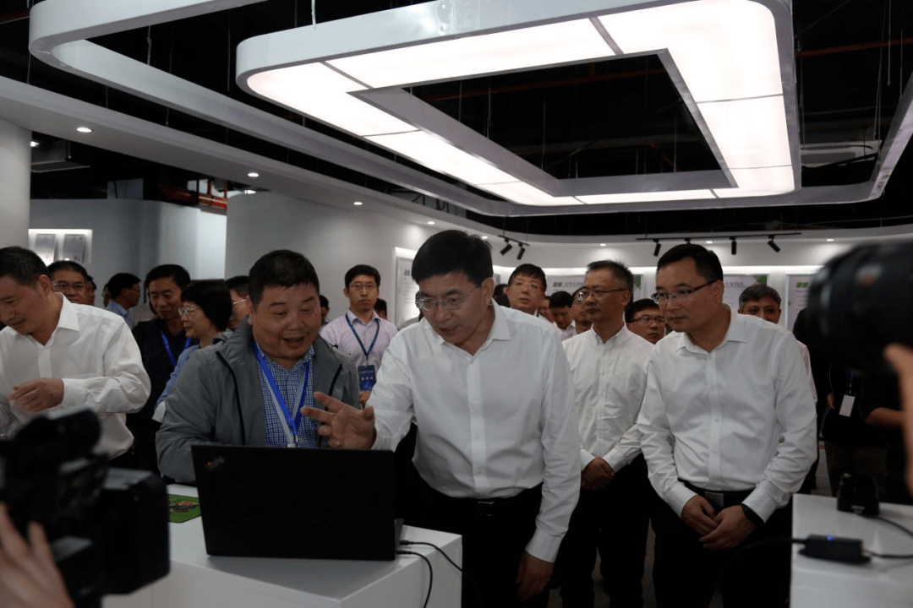

金华市智能制造研究院—浙师大培养基地揭牌

9月30日上午，以“追梦金义•智创未来”为主题的浙中产业发展论坛暨金华科技城•浙大网新科技产业孵化园开园仪式在金义新区金华科技城举行。金华市委书记陈龙，浙江师范大学党委书记蒋国俊，中国科学院院士都有为，中国工程院院士龚晓南，金华市委常委、常务副市长郑余良，市委常委、组织部部长郑敏强，省科技厅二级巡视员叶翠萍，副市长张新宇，浙师大副校长钟依均等出席论坛。
论坛前后，陈龙、蒋国俊、钟依均等参观了金华市智能制造研究院。金华市经信局党委委员、副局长郭维固，我校党委书记蒋国俊、副校长钟依均，研工部部长杨竞红与我院院长鄂世举、党委书记童卫丰分别为金华市智能制造研究院和浙师大研究生培养基地揭牌。我院院长鄂世举为金华市智能制造研究院院长。
参观过程中，由浙江师范大学工学院和金华市机器换人服务中心联合研制的多工位高速视觉零件瑕疵分选设备受到了广泛关注。我院副院长王冬云向领导们做了详细介绍，该成果已经在今飞公司的轮毂生产线上投入使用。
我院毛剑副教授向领导们介绍了浙江师范大学工学院与金华市蓝海光电技术有限公司联合开发的结合产、学、研三位一体的产品——激光传感器及应用其技术所生产出来的产品“萌镜”（儿童防近视眼镜）。
据悉，金华市智能制造研究院由浙江师范大学与金华市人民政府共建，是浙师大深化校地合作、推进学科建设与发展的重大平台。学校将围绕金华市制造业重点细分行业创新发展需求，依托人才优势，开展产业链“卡脖子”核心技术攻关及行业智能制造示范点建设。未来，浙师大将进一步完善项目化、常态化、制度化的联合工作推进机制，集中优势资源，组织精干力量，推动合作项目精准落地、快速推进、高效产出，力争把金华市智能制造研究院早日落地建成金华市工业经济发展的高端智库、人才引育基地、技术创新高地及成果孵化基地。
金华市委组织部（人才办）、市发改委、市经信局、市科技局、市财政局、市投资促进中心、市科协、金义新区政府相关负责人，浙师大校办副主任项伟，科研院处长章明卓、副处长刘勇，研工部部长杨竞红，人事处副处长刘洋，工学院班子成员及相关负责人参加活动。